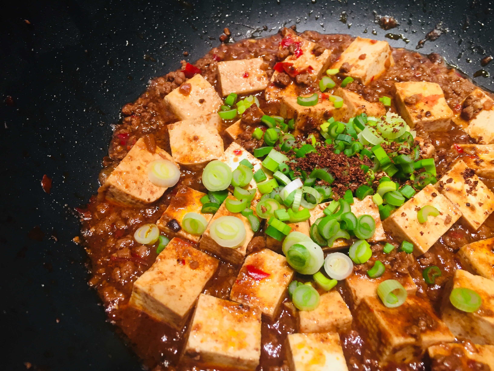

Home
Mapo Tofu

Description
Silken tofu in a fiery, numbing Sichuan sauce with ground pork. Bold, fast, and deeply satisfying.
Ingredients
- 7.1 ounces silken tofu, cubed
- 2.7 ounces ground pork
- 1 tablespoons doubanjiang (spicy bean paste)
- 0.4 cups chicken stock
- 0.5 tablespoons soy sauce
- 0.5 tablespoons cornstarch mixed with water
- 0.3 teaspoons Sichuan peppercorn, toasted and ground
- 1.5 pieces garlic cloves, minced
- 1 pieces green onions, sliced
- 1 tablespoons neutral oil
Steps
-
Brown the pork: Heat 1 tablespoons neutral oil in a wok over high heat. Cook 2.7 ounces ground pork until crispy and browned, breaking it up as it cooks. Add 1.5 pieces garlic cloves, minced and 1 tablespoons doubanjiang (spicy bean paste), stir-fry 2 minutes until fragrant.
-
Build the sauce: Pour in 0.4 cups chicken stock and 0.5 tablespoons soy sauce. Bring to a simmer, then gently slide in 7.1 ounces silken tofu, cubed. Simmer 3 minutes without stirring to keep tofu intact.
-
Thicken and finish: Drizzle in 0.5 tablespoons cornstarch mixed with water and stir gently until the sauce coats the tofu. Top with 0.3 teaspoons Sichuan peppercorn, toasted and ground and 1 pieces green onions, sliced. Serve immediately over steamed rice.